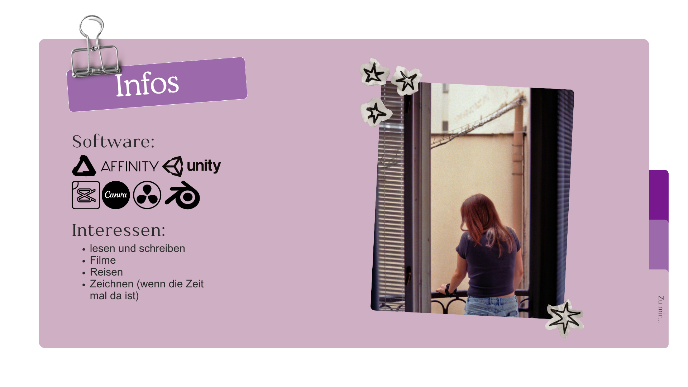

Kurz zu mir...
Toll, dass ihr hier seid. Ich bin Alicia, 23 und studiere Medien und Kommunikation an der Hochschule Offenburg. Ich bin ein kleiner Filmnerd und reise gerne. In meiner Freizeit schreibe ich viel und liebe es Geschichten aufs Papier zu bringen. Meine Interessen sind irgendwie überall verteilt, da ich mich für vieles begeistern lasse. Aktuell bin ich frisch nach Karlsruhe gezogen und suche nach einem coolen Unternehmen, in dem ich mein Praxissemester absolvieren kann. Wollt ihr mir was Neues beibringen?

